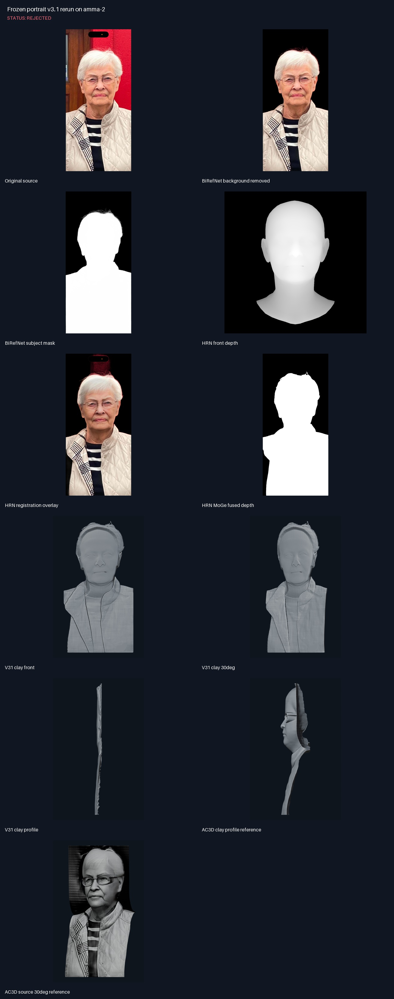
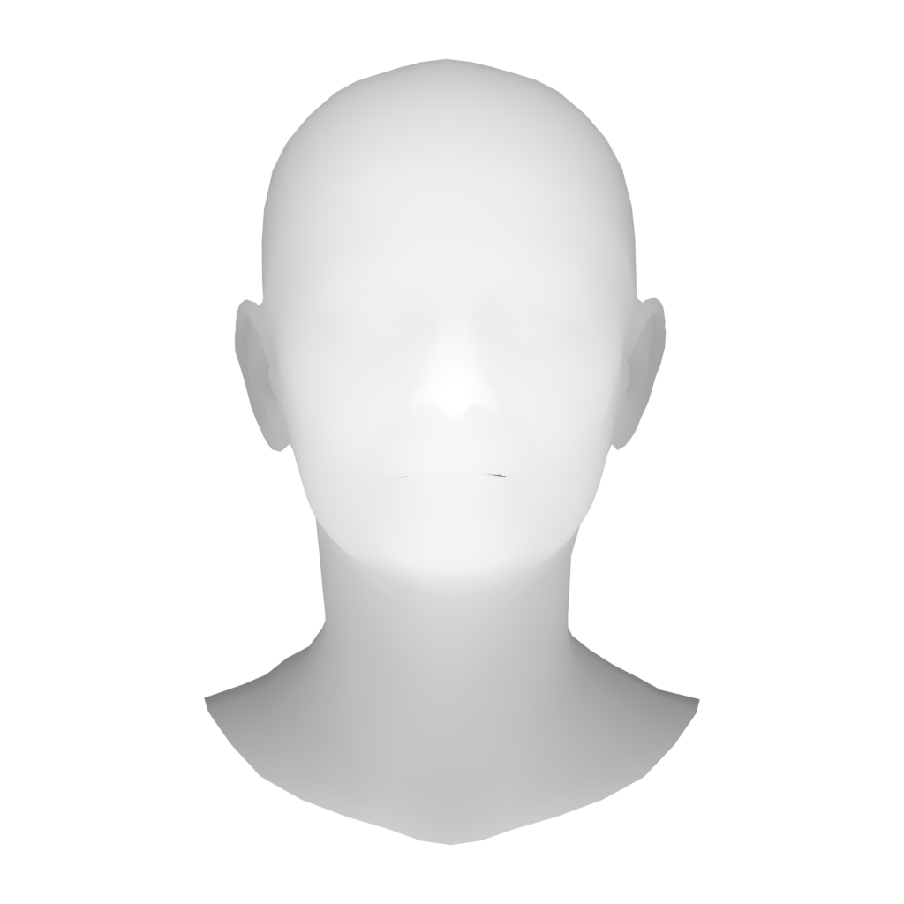
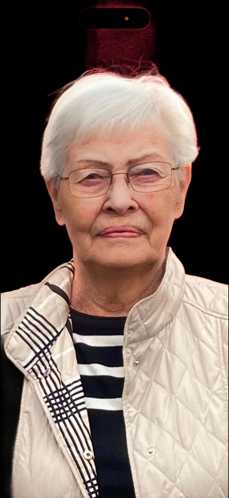
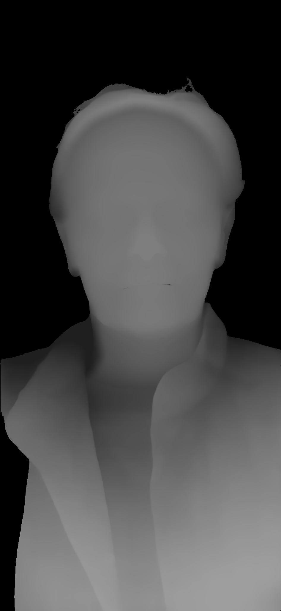
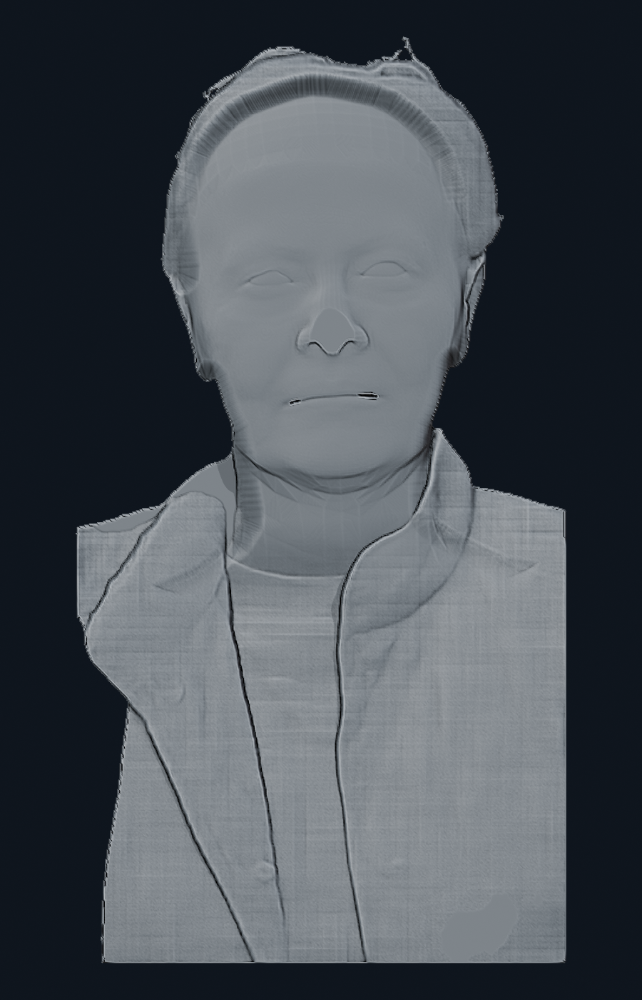
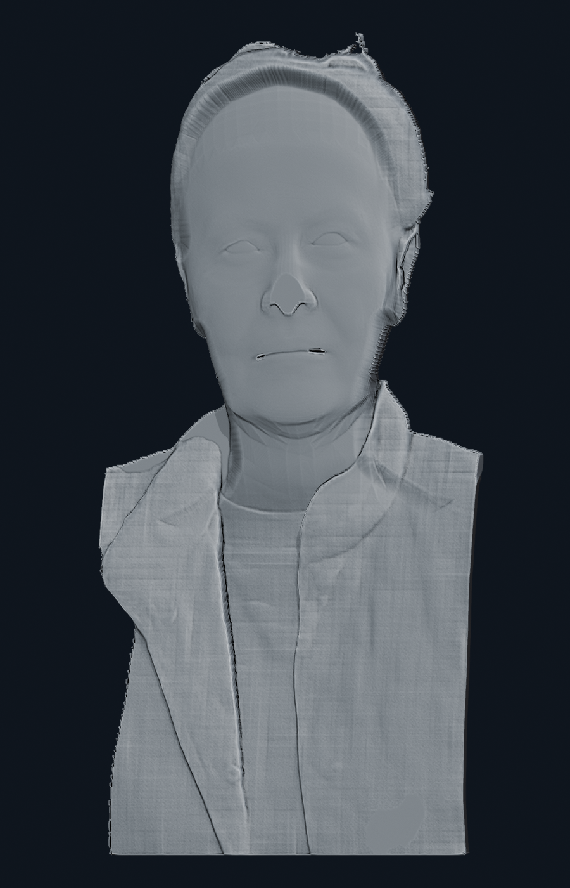
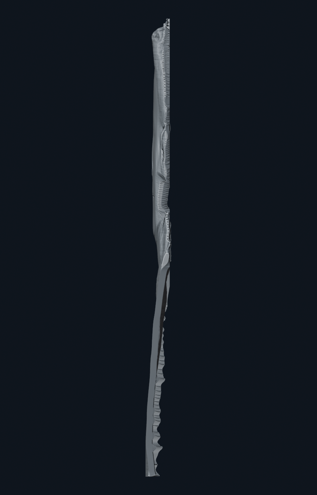
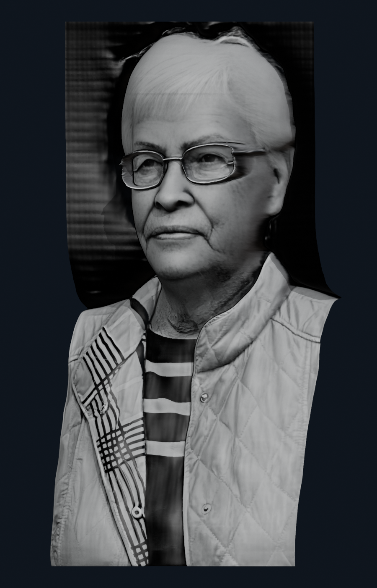

Frozen portrait v3.1 rerun on amma-2
Status: REJECTED
- The same stored BiRefNet Portrait background-removed input, HRN head, and MoGe depth were used.
- The run is reproducible but the face is flattened, glasses are not real geometry, and the profile is too thin.
- Keep as a negative baseline; do not expose it as the approved self-service portrait preset.

Contact sheet Original source
Original source
 BiRefNet background removed
BiRefNet background removed
 BiRefNet subject mask
BiRefNet subject mask

HRN front depth

HRN registration overlay

HRN MoGe fused depth

V31 clay front

V31 clay 30deg

V31 clay profile
 AC3D clay profile reference
AC3D clay profile reference

AC3D source 30deg reference